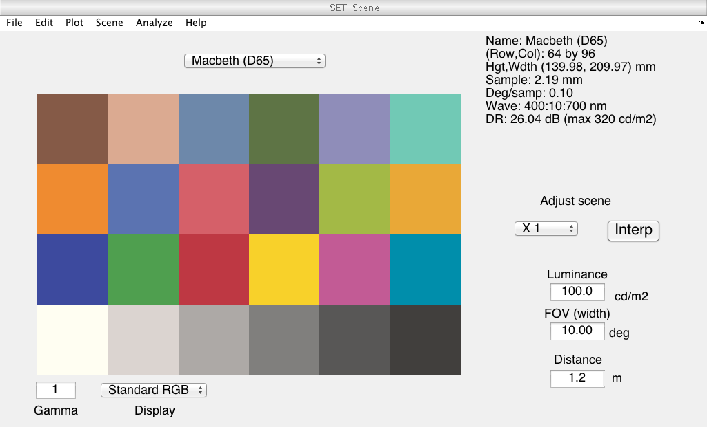
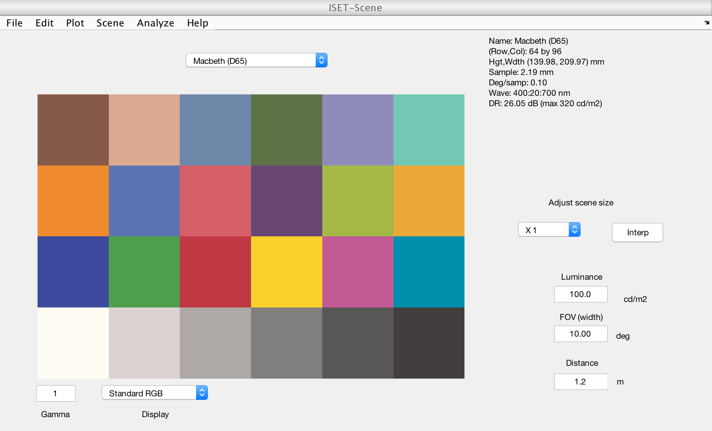
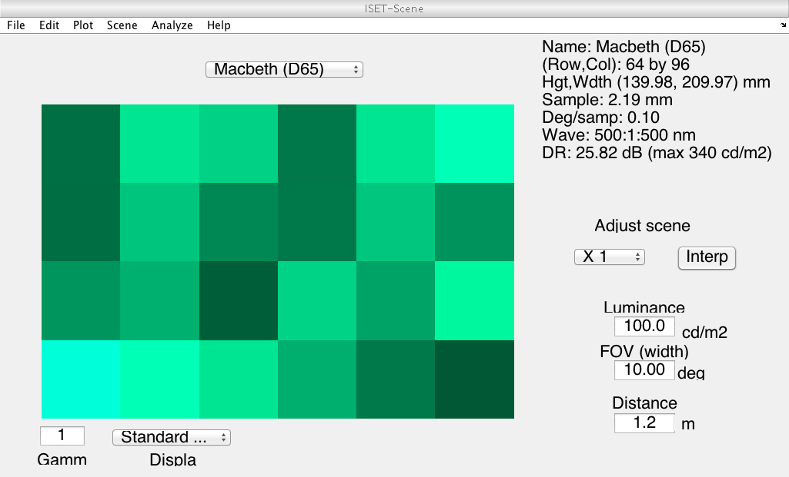
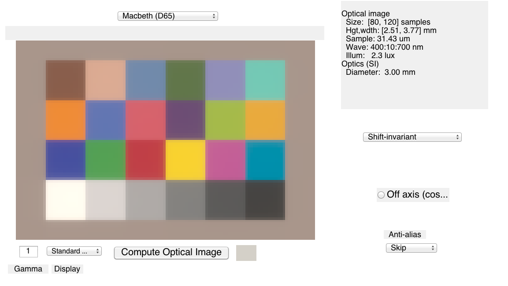
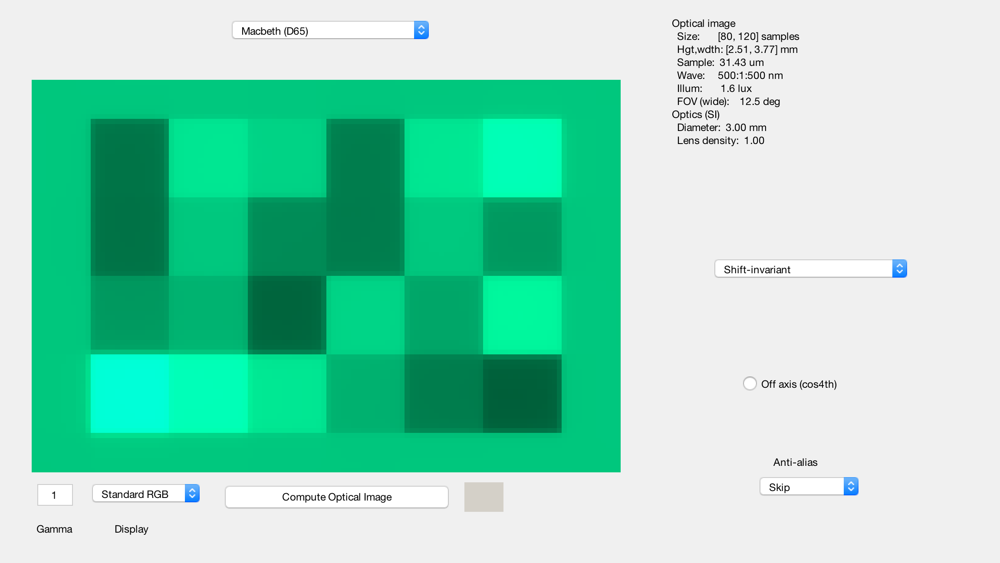
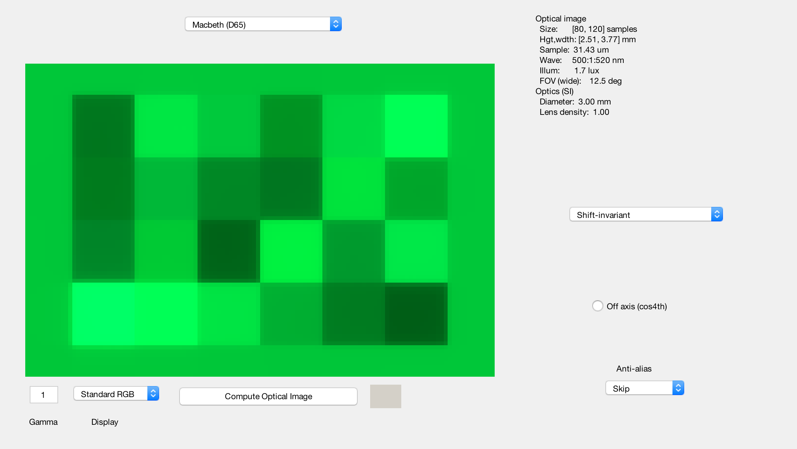
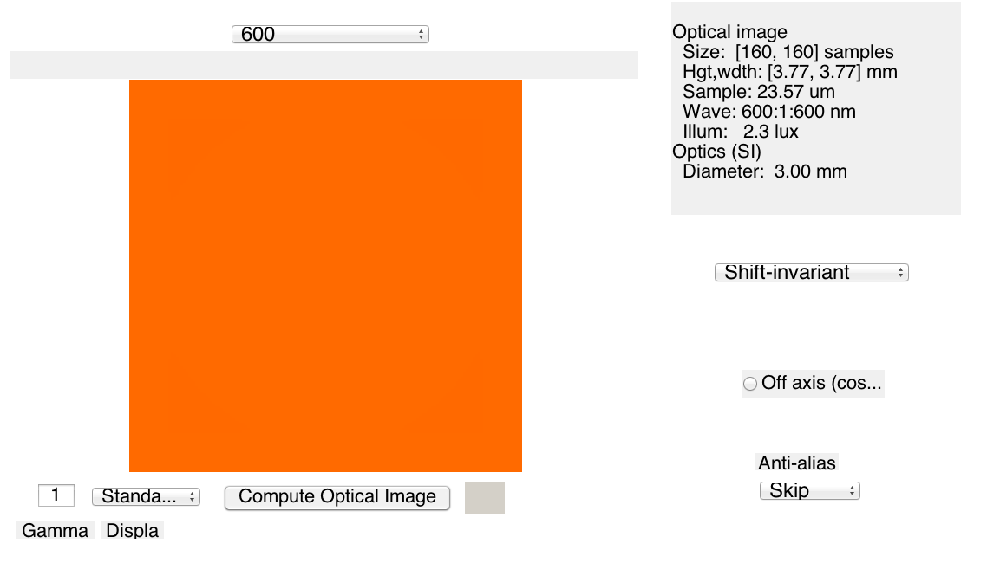
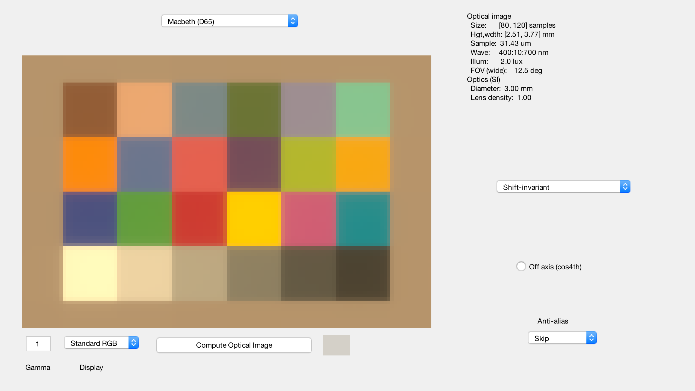

Contents
t_oiWave
Do some unit testing about changing the wavelength samples in a scene and an optical image
This arose because there was a moment when BW had difficulty in ISETBIO with creating and analyzing monochromatic scenes. The management of wavelength and computation with these scenes ran into trouble because some data were cleared (or not). So the photon data that had been interpolated in oiSet() was eliminated, and I started worrying.
Also, I stopped clearing optics data.
ieInit
Make an MCC
scene0 = sceneCreate;
wave0 = sceneGet(scene0,'wave');
vcAddObject(scene0); sceneWindow;
 Create a new scene with subsampled wavelengths
wave = wave0(1:2:end);
scene = sceneSet(scene0,'wave',wave);
vcAddObject(scene); sceneWindow;
 Pull out one wavelength
wave = 500;
scene = sceneSet(scene0,'wave',wave);
vcAddObject(scene); sceneWindow;
10 nm band assumed
Now start computing with an oi
oi = oiCreate('human');
oi = oiCompute(oi,scene0);
oi0 = oi;
vcAddObject(oi); oiWindow;
 Compute with a monochrome case
wave = 500;
scene = sceneSet(scene0,'wave',wave);
oi = oiCompute(oi,scene);
vcAddObject(oi); oiWindow;
Interpolating OI photon data 10 nm band assumed
A section
wave = 500:30:620;
scene = sceneSet(scene0,'wave',wave);
oi = oiCompute(oi,scene);
vcAddObject(oi); oiWindow;
Extrapolation - Setting oi photon data to zero.

Fine sampling
wave = 500:1:520;
scene = sceneSet(scene0,'wave',wave);
oi = oiCompute(oi,scene);
vcAddObject(oi); oiWindow;
Extrapolation - Setting oi photon data to zero.
Uniform monochromatic cases
wList = 400:100:600; for ww=1:length(wList) mscene = sceneCreate('uniform monochromatic',wList(ww)); oi = oiCompute(oi,mscene); oi = oiSet(oi,'name',sprintf('%d',wList(ww))); vcAddObject(oi); oiWindow; end
ieLuminanceFromEnergy monochrome: 10 nm band assumed Extrapolation - Setting oi photon data to zero. 10 nm band assumed ieLuminanceFromEnergy monochrome: 10 nm band assumed Extrapolation - Setting oi photon data to zero. 10 nm band assumed ieLuminanceFromEnergy monochrome: 10 nm band assumed Extrapolation - Setting oi photon data to zero. 10 nm band assumed
What happens when we go out of range?
wave = 390:450; try scene = sceneSet(scene0,'wave',wave); catch disp('Extrapolation not allowed') end
Extrapolation not allowed
Interpolate on the oi itself
wave = wave0(1:2:end);
oi = oiSet(oi0,'wave',wave);
scene = sceneCreate;
oi = oiCompute(oi,scene);
vcAddObject(oi); oiWindow;
Extrapolation - Setting oi photon data to zero. Extrapolation - Setting oi photon data to zero.